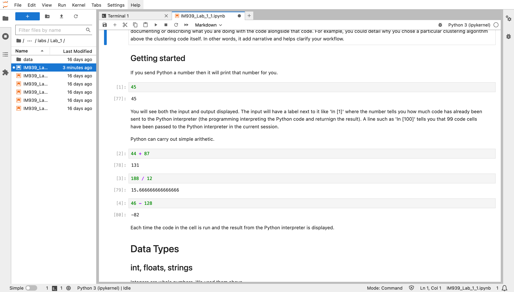

4545Welcome to the first Python lab. Our aim is to introduce a little bit of Python and help you be comfortable with using Jupyter notebooks. No previous knowledge is assumed and questions are encouraged!
This module uses a combination of different technologies (technological stack) besides python. You will need to be familiar with all their components to follow the labs as well as the assignments. You can find a brief description of the main components below, and you can refer to Appendix A for a more technical explanation of the setup.
Please make sure you have Anaconda Python installed and running on your computer. Instructions for doing this can be found on Appendix A.
Python is a very popular general purpose programming language. Data scientists use it to clean up, analyse and visualise data. A major strength of python is that the core Python functionality can be extended using libraries. In future labs, you will learn about popular data science libraries such as pandas and numpy.
It is useful to think of programming languages as a structured way to tell the computer what to do. We cover some of the basic features of Python in this lab.
Anaconda1 is a distribution platform that manages and installs many tools used in data science, such as programming languages (python), libraries, IDEs2… as well as a GUI (Anaconda navigator) and a CLI (Anaconda interpreter). Anaconda does some other useful things, such as creating isolated virtual environments, which we will be using for this module.
1 If you want to know more about Anaconda, these tutorials can be a good start: https://www.tangolearn.com/what-is-anaconda/, https://www.upgrad.com/blog/python-anaconda-tutorial/
2 Some specific Integrated Development Environments (IDEs) for Python included in Anaconda are VS Code, Jupyterlab and Spyder. In this module, there’s no preferred IDE (actually, different members of the staff use different IDEs) and you can use the one you are more familiar with.
Virtual environments are a way to install all the dependencies (and their right version) required for a certain project by isolating python and libraries’ specific versions. Every person who recreatesthe virtual environment will be using the same packages and versions, reducing errors and increasing reproducibility. While they are considered an advanced practice, and are therefore out of scope of this course, you may want to learn about Python’s environments here: https://realpython.com/python-virtual-environments-a-primer/
Jupyter notebooks, such as this one, allow you to combine text and code into documents you can edit in the browser. The power of these notebooks is in documenting or describing what you are doing with the code alongside that code. For example, you could detail why you chose a particular clustering algorithm above the clustering code itself. In other words, it add narrative and helps clarify your workflow.

If you send Python a number then it will print that number for you.
4545You will see both the input and output displayed. The input will have a label next to it like ‘In [1]’ where the number tells you how much code has already been sent to the Python interpreter (the programming interpreting the Python code and returnign the result). A line such as ‘In [100]’ tells you that 99 code cells have been passed to the Python interpreter in the current session.
Python can carry out simple arithetic.
44 + 87131188 / 1215.66666666666666646 - 128-82Each time the code in the cell is run and the result from the Python interpreter is displayed.
As we saw at this unit in the Skills Programme, programming languages use types to help them understand what a piece of data might represent. Knowing how data types work is important because they define what can be done and cannot be done with them. Each programming language has different data types which can be extended by other libraries such as Pandas, but these are some of the most frequent ones (and the ones we will be facing more frequently).
Integers are whole numbers, like the ones we used above. We can check an object’s data type using type():
type(33)intYou can also have floats (numbers with decimal points)
33.433.4type(33.4)floatand a series of characters (strings).
'I have a plan, sir.''I have a plan, sir.'type('I have a plan, sir.')strData types are great and operators such as * do different things depending on the data type. For instance,
33 * 399That seems quite sensible. What about if we had a string? Run teh below line. What is the * doing?
'I have a plan, sir' * 3'I have a plan, sirI have a plan, sirI have a plan, sir'There are also operators which only work with particular data types.
'I have a plan, sir.' / 2TypeError: unsupported operand type(s) for /: 'str' and 'int'This error message is very informative indeed. It tells us the line which caused the problem and that we have an error. Specifically, our error is a TypeError.
In this case, it says that the line 'I have a cunning plan' / 2 consists of string / int. We are trying to divide a string and int. The / operand is not able to divide a string by an int.
You can collect multiple values in a list. This is how they look like:
[35, 'brown', 'yes'][35, 'brown', 'yes']And we can check theyr type:
type([35, 'brown', 'yes'])listOr add keys to the values as a dictionary.
{'age':35, 'hair colour': 'brown', 'Glasses': 'yes'}{'age': 35, 'hair colour': 'brown', 'Glasses': 'yes'}type({'age':35, 'hair colour': 'brown', 'Glasses': 'yes'})dictVariables are bins for storing things in. These things can be data types. For example, the below creates a variable called my_height and stores the in 140 there.
my_height = 140The Python interpreter is now storing the int 140 in a bin called my_height. If you pass the variable name to the interpreter then it will behave just like if you typed in 140 instead.
my_height140140
Variables are neat when it comes to lists.
my_heights = [231, 234, 43]
my_heights[231, 234, 43]my_heights[1]234Wait, what happened above? What do you think the [1] does?
You can index multiple values from a list.
my_heights[0:2][231, 234]What does the below do?
radius = 40
pi = 3.1415
circle_area = pi * (radius * radius)
length = 12
square_area = length * length
my_areas = [circle_area, square_area]my_areas[5026.400000000001, 144]As an aside, you can include comments which are not evaluated by the Python interpreter.
# this is a comment. Python will ignore it.
# another comment.
n = 33You’ve reached the end of the first notebook. We’ve looked at basic data type and variables. These are key components of all programming languages and a key part of working with data.
In the next notebook we will examine using libraries, loading in data, loops and functions.